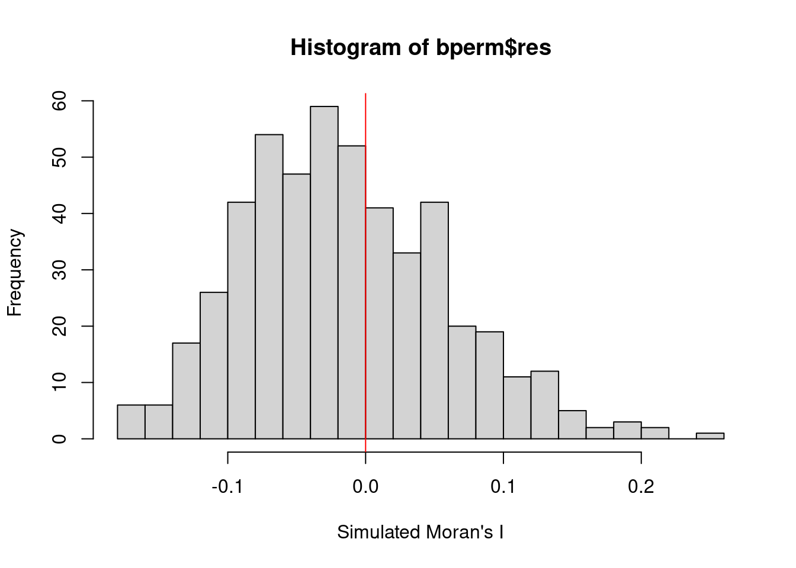
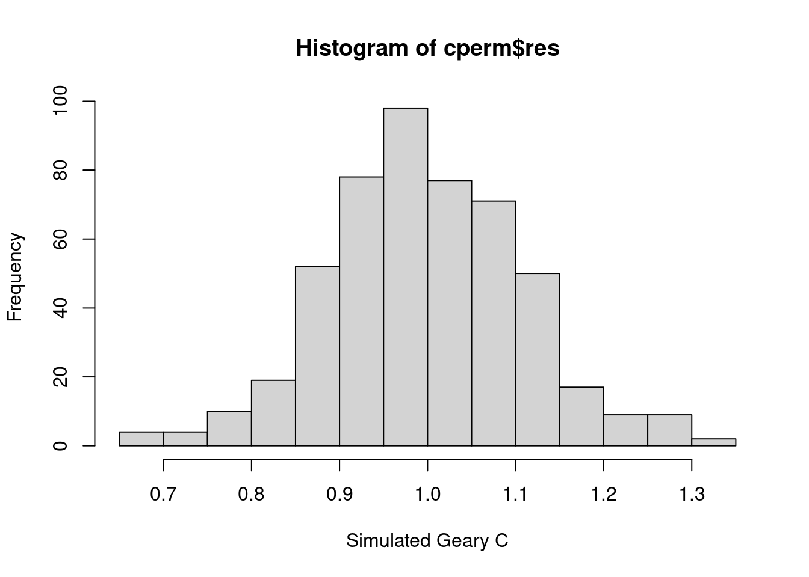
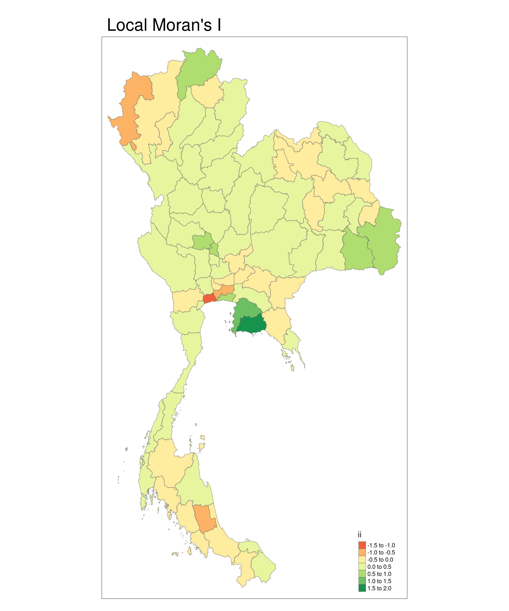
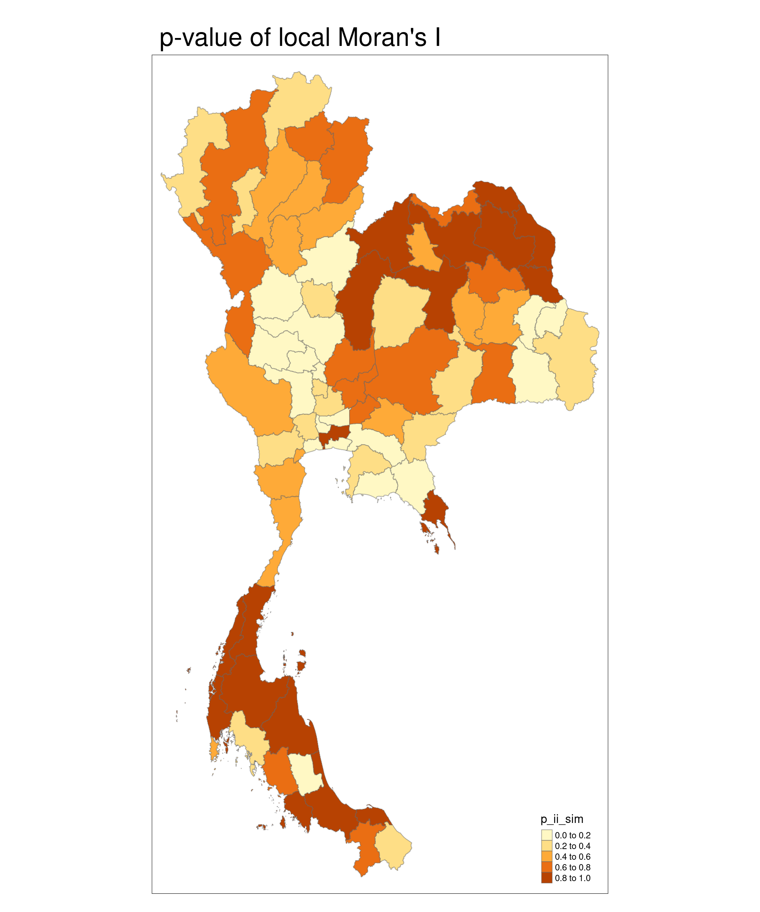
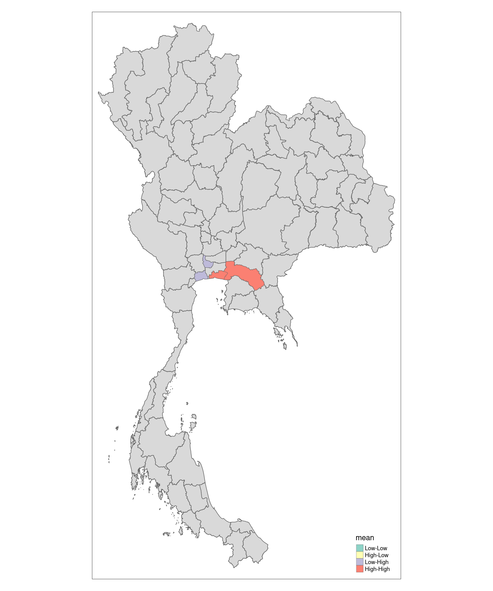
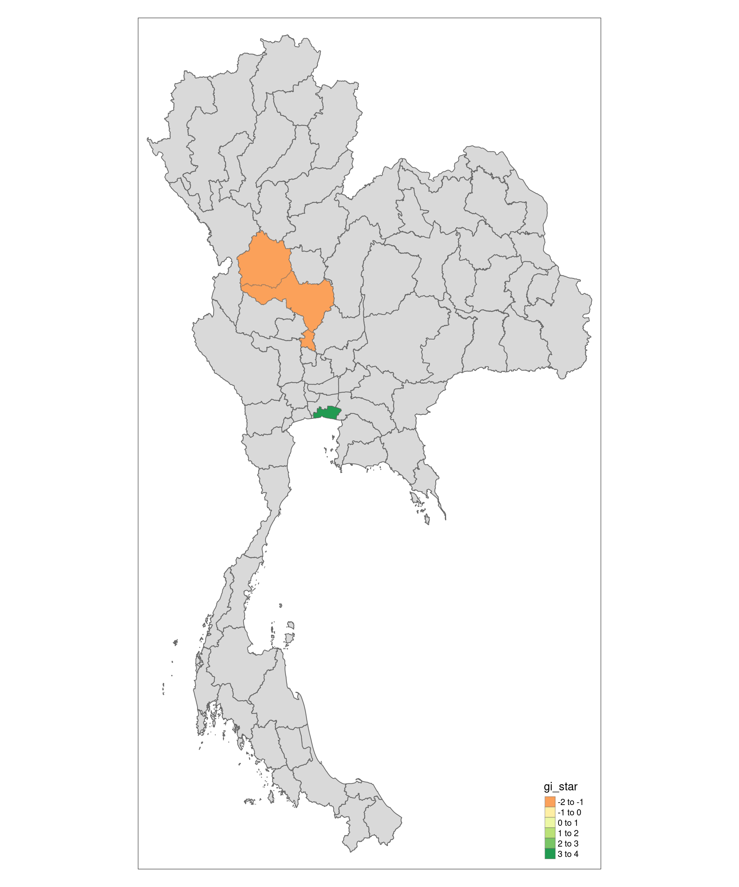
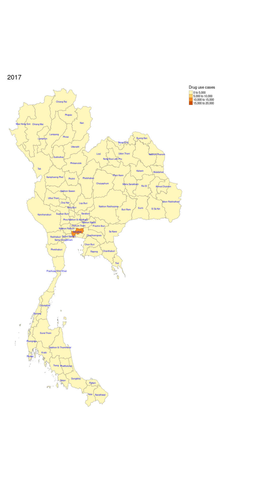

pacman::p_load(sf, tidyverse, tmap, sfdep)Take Home Exercise 2
Drug abuse is a significant public health issue in Thailand, which is situated near the Golden Triangle, one of the largest drug production regions in the world. Thailand’s geographic location and expanding transportation infrastructure have reinforced its role as a major market and transit point for drug trafficking. This has further fueled domestic drug consumption, especially among the youth, with an estimated 2.7 million young people involved in drug use. Of those aged 15 to 19, approximately 300,000 are in need of treatment. This study seeks to perform a geospatial analysis of drug abuse patterns within Thailand, examining the socio-economic conditions and infrastructural factors that influence the distribution and prevalence of drug abuse in various regions.
Main data processing
Import dependencies
Import data
states_sf <- st_read("data", layer = "tha_admbnda_adm1_rtsd_20220121")Reading layer `tha_admbnda_adm1_rtsd_20220121' from data source
`/home/tropicbliss/GitHub/quarto-project/Take-home_Ex/Take-home_Ex02/data'
using driver `ESRI Shapefile'
Simple feature collection with 77 features and 16 fields
Geometry type: MULTIPOLYGON
Dimension: XY
Bounding box: xmin: 97.34336 ymin: 5.613038 xmax: 105.637 ymax: 20.46507
Geodetic CRS: WGS 84drugs_data <- read_csv("data/thai_drug_offenses_2017_2022.csv")Rows: 7392 Columns: 5
── Column specification ────────────────────────────────────────────────────────
Delimiter: ","
chr (3): types_of_drug_offenses, province_th, province_en
dbl (2): fiscal_year, no_cases
ℹ Use `spec()` to retrieve the full column specification for this data.
ℹ Specify the column types or set `show_col_types = FALSE` to quiet this message.tmap_mode("plot")tmap mode set to plottingtm_shape(states_sf) +
tm_polygons() +
tm_text("ADM1_EN", col = "blue", size = 0.5, remove.overlap = TRUE)
Data wrangling
To combine the geographical spatial data with the aspatial drug cases data, we need to make sure that the state names in both data-frames are normalised.
can_be_left_joined <- all(states_sf$ADM1_EN %in% drugs_data$province_en)# values in states_sf not in drugs_data
non_matching_values <- setdiff(states_sf$ADM1_EN, drugs_data$province_en)
non_matching_values[1] "Lop Buri" "Bueng Kan"As we can see, we have two state names that are not found in drugs_data.
unique_values <- sort(unique(drugs_data$province_en))
unique_values [1] "Amnat Charoen" "Ang Thong"
[3] "Bangkok" "buogkan"
[5] "Buri Ram" "Chachoengsao"
[7] "Chai Nat" "Chaiyaphum"
[9] "Chanthaburi" "Chiang Mai"
[11] "Chiang Rai" "Chon Buri"
[13] "Chumphon" "Kalasin"
[15] "Kamphaeng Phet" "Kanchanaburi"
[17] "Khon Kaen" "Krabi"
[19] "Lampang" "Lamphun"
[21] "Loburi" "Loei"
[23] "Mae Hong Son" "Maha Sarakham"
[25] "Mukdahan" "Nakhon Nayok"
[27] "Nakhon Pathom" "Nakhon Phanom"
[29] "Nakhon Ratchasima" "Nakhon Sawan"
[31] "Nakhon Si Thammarat" "Nan"
[33] "Narathiwat" "Nong Bua Lam Phu"
[35] "Nong Khai" "Nonthaburi"
[37] "Pathum Thani" "Pattani"
[39] "Phangnga" "Phatthalung"
[41] "Phayao" "Phetchabun"
[43] "Phetchaburi" "Phichit"
[45] "Phitsanulok" "Phra Nakhon Si Ayutthaya"
[47] "Phrae" "Phuket"
[49] "Prachin Buri" "Prachuap Khiri Khan"
[51] "Ranong" "Ratchaburi"
[53] "Rayong" "Roi Et"
[55] "Sa Kaeo" "Sakon Nakhon"
[57] "Samut Prakan" "Samut Sakhon"
[59] "Samut Songkhram" "Saraburi"
[61] "Satun" "Si Sa Ket"
[63] "Sing Buri" "Songkhla"
[65] "Sukhothai" "Suphan Buri"
[67] "Surat Thani" "Surin"
[69] "Tak" "Trang"
[71] "Trat" "Ubon Ratchathani"
[73] "Udon Thani" "Uthai Thani"
[75] "Uttaradit" "Yala"
[77] "Yasothon" Now, we need to replace Loburi with Lop Buri and vice versa.
drugs_data <- drugs_data %>% mutate(province_en = recode(province_en, "Loburi" = "Lop Buri", "buogkan" = "Bueng Kan"))Now, I just need to make sure that there are no states that I missed.
non_matching_values <- setdiff(states_sf$ADM1_EN, drugs_data$province_en)
non_matching_valuescharacter(0)Are the number of cases of drug abuse in Thailand affected by location, or do they stay the same no matter where you are in the country?
Drug-related issues might be influenced by various regional factors such as socioeconomic conditions, accessibility to drugs, law enforcement presence, and cultural or local norms. For example, urban areas may have higher rates due to larger populations and potentially more significant drug trade routes, while certain rural areas might experience drug abuse related to economic hardship or lack of access to preventive measures.
Answering this question can help provide valuable insights into how geographic, social, and economic factors influence drug abuse patterns in Thailand. By understanding these spatial differences, public health officials, policymakers, and law enforcement can target specific regions with tailored intervention programs, resource allocation, and educational campaigns. Moreover, it can help researchers analyze whether prevention and treatment efforts need to be region-specific to be more effective, which could lead to more efficient use of resources in addressing drug abuse in the country.
Both Moran’s I and Geary’s C can help in analyzing whether the spatial distribution of drug abuse cases in Thailand is random or exhibits spatial autocorrelation, meaning that locations near each other have similar or dissimilar values.
Data wrangling
sort(unique(drugs_data$fiscal_year))[1] 2017 2018 2019 2020 2021 2022Since in this case, we are analysing the number of cases of drug abuse as a whole, we will aggregate all the data provided by state across the time period of 2017-2022.
agg_by_year_sf <- drugs_data %>%
group_by(province_en, types_of_drug_offenses) %>%
summarise(no_cases = sum(no_cases))`summarise()` has grouped output by 'province_en'. You can override using the
`.groups` argument.sort(unique(agg_by_year_sf$types_of_drug_offenses)) [1] "conspiracy_cases"
[2] "drug_use_cases"
[3] "export_cases"
[4] "import_cases"
[5] "possession_cases"
[6] "possession_with_intent_to_distribute_cases"
[7] "production_cases"
[8] "suspects_in_conspiracy_cases"
[9] "suspects_in_drug_use_cases"
[10] "suspects_in_export_cases"
[11] "suspects_in_import_cases"
[12] "suspects_in_possession_cases"
[13] "suspects_in_possession_with_intent_to_distribute_cases"
[14] "suspects_in_production_cases"
[15] "suspects_in_trafficking_cases"
[16] "trafficking_cases" Our data contains all sorts of data. For now, we are only interested in drug use cases.
agg_by_year_sf <- agg_by_year_sf %>% filter(types_of_drug_offenses == "drug_use_cases") %>% select(1, 3)To make sure that left_join works properly, we need to make sure that the column names of both columns representing the state name in English is the same.
agg_by_year_sf <- agg_by_year_sf %>% rename(ADM1_EN = "province_en")After that, we can join both data-tables together and select only the relevant columns.
state_drug_stats <- left_join(states_sf, agg_by_year_sf) %>% select(3, 17:18) %>% rename(cases = "no_cases")Joining with `by = join_by(ADM1_EN)`Analysis
state_drug_stats <- state_drug_stats %>% arrange(desc(cases))
state_drug_stats$ADM1_EN[1:3][1] "Bangkok" "Chon Buri" "Nakhon Si Thammarat"The state with the highest drug use rate is Bangkok, followed by Chon Buri and Nakhon Si Thammarat. The fact that Bangkok has the highest drug use rate is not particularly surprising, given that it is the most populous Thai city. Chon Buri is home to Pattaya City, which is particularly known for its nightlife and seedy atmosphere.
Visualising drug abuse rate by state
equal <- tm_shape(state_drug_stats) +
tm_fill("cases",
n = 5,
style = "equal") +
tm_borders(alpha = 0.5) +
tm_layout(main.title = "Equal interval classification")
quantile <- tm_shape(state_drug_stats) +
tm_fill("cases",
n = 5,
style = "quantile") +
tm_borders(alpha = 0.5) +
tm_layout(main.title = "Equal quantile classification")
tmap_arrange(equal,
quantile,
asp=1,
ncol=2)
We are using two methods here to classify data into bins.
In equal interval classification, the range of data values is divided into equal-sized intervals. The same range of values is assigned to each class. For example, if the data spans from 0 to 100 and you want 5 classes, each class would cover a range of 20 units (0-20, 21-40, etc.), regardless of how many data points fall into each class.
In equal quantile classification, the data is divided into classes so that each class contains an equal number of data points, regardless of the range of values. For example, if you have 100 data points and you want 5 classes, each class will contain 20 data points, regardless of the range of values they fall into. The boundaries between classes are determined by the percentiles of the data.
The question of whether to use which method depends on whether your data is geographically evenly distributed. If your data is evenly distributed, it’s better to use equal interval classification. If your data is unevenly distributed, equal quantile classification might be a better choice.
Moran’s I
Before we do any analysis, we need to generate the nearest neighbours of each state. However, some states have no neighbours, and we need to deal with that.

wm_q <- state_drug_stats %>% mutate(nb = st_contiguity(geometry), .before = 1)Warning: There were 2 warnings in `stopifnot()`.
The first warning was:
ℹ In argument: `nb = st_contiguity(geometry)`.
Caused by warning in `spdep::poly2nb()`:
! some observations have no neighbours;
if this seems unexpected, try increasing the snap argument.
ℹ Run `dplyr::last_dplyr_warnings()` to see the 1 remaining warning.summary(wm_q) nb ADM1_EN cases
NULL:16, 17, 24, 33, 41, 77 Length:77 Min. : 1426
NULL:8, 16, 36 Class :character 1st Qu.: 5596
NULL:6, 12, 40, 64, 69 Mode :character Median : 8921
NULL:11, 20, 27 Mean :11890
NULL:10, 21, 29, 52, 76 3rd Qu.:13651
NULL:3, 44, 53, 64, 73 Max. :65522
NULL:9, 13, 14, 30, 35, 38, 42, 63
NULL:2, 36
NULL:7, 13, 14, 18, 28, 46, 47, 51, 75
NULL:5, 21, 31
NULL:4, 19, 20, 22
NULL:3, 50, 58, 65, 69
NULL:7, 9, 38, 46
NULL:7, 9, 22, 35, 51
NULL:24, 34, 55, 74, 77
NULL:1, 2, 17, 30, 33, 35, 36, 42
NULL:1, 16
NULL:9, 23, 28, 47, 48, 75
NULL:11, 20, 22, 25, 28, 51
NULL:4, 11, 19, 25, 27
NULL:5, 10, 26, 29, 31, 52, 68
NULL:11, 14, 19, 51
NULL:18, 39, 47, 48
NULL:1, 15, 34, 41, 43, 49, 77
NULL:19, 20, 27, 28, 37, 48
NULL:21, 31, 32, 59, 68
NULL:4, 20, 25
NULL:9, 18, 19, 25, 48, 51
NULL:5, 21, 52
NULL:7, 16, 35, 42
NULL:10, 21, 26, 32
NULL:26, 31, 59
NULL:1, 16, 41, 42, 43, 63
NULL:15, 24, 49, 52, 71
NULL:7, 14, 16, 30, 36
NULL:2, 8, 16, 35, 66
NULL:25, 39, 48
NULL:7, 13, 43, 46, 60, 63, 70, 72
NULL:23, 37, 48
NULL:3, 44, 64, 69
NULL:1, 24, 33, 43
NULL:7, 16, 30, 33, 63
NULL:24, 33, 38, 41, 49, 63, 70
NULL:6, 40, 64
NULL:0
NULL:9, 13, 38, 47, 54, 60, 61
NULL:9, 18, 23, 46, 54, 75
NULL:18, 23, 25, 28, 37, 39
NULL:24, 34, 43, 67, 70, 71, 72
NULL:12, 62, 65
NULL:9, 14, 19, 22, 28
NULL:5, 21, 29, 34, 56, 60, 68, 71, 76
NULL:6, 57, 73
NULL:46, 47, 56, 59, 61, 68
NULL:15, 62, 74
NULL:52, 54, 60, 61, 68
NULL:53, 73
NULL:12, 65, 69
NULL:26, 32, 54, 68
NULL:38, 46, 52, 56, 61, 67, 71, 72
NULL:46, 54, 56, 60
NULL:50, 55
NULL:7, 33, 38, 42, 43
NULL:3, 6, 40, 44
NULL:12, 50, 58
NULL:36
NULL:49, 60, 71, 72
NULL:21, 26, 52, 54, 56, 59
NULL:3, 12, 40, 58
NULL:38, 43, 49, 72
NULL:34, 49, 52, 60, 67
NULL:38, 49, 60, 67, 70
NULL:6, 53, 57
NULL:15, 55, 77
NULL:9, 18, 47
NULL:5, 52
NULL:1, 15, 24, 74
geometry
MULTIPOLYGON :77
epsg:4326 : 0
+proj=long...: 0
tmap_mode("plot")tmap mode set to plottingtm_shape(states_sf) +
tm_polygons() +
tm_text("ADM1_EN", col = "blue", size = 0.5, remove.overlap = TRUE)
As you can see, Phuket is not physically connected to the mainland. To deal with that, we will manually set the neighbour of Phuket as Phangnga (which is fair given that the only bridge to Phuket is via Phangnga).
We first need to get the index of Phangnga.
which(wm_q$ADM1_EN == "Phangnga")[1] 58wm_q$nb[wm_q$ADM1_EN == "Phuket"] <- as.integer(c(58))Now, we can calculate the weights.
wm_q <- wm_q %>% mutate(wt = st_weights(nb, style = "W"), .before = 1)
wm_qSimple feature collection with 77 features and 4 fields
Geometry type: MULTIPOLYGON
Dimension: XY
Bounding box: xmin: 97.34336 ymin: 5.613038 xmax: 105.637 ymax: 20.46507
Geodetic CRS: WGS 84
First 10 features:
wt
1 0.1666667, 0.1666667, 0.1666667, 0.1666667, 0.1666667, 0.1666667
2 0.3333333, 0.3333333, 0.3333333
3 0.2, 0.2, 0.2, 0.2, 0.2
4 0.3333333, 0.3333333, 0.3333333
5 0.2, 0.2, 0.2, 0.2, 0.2
6 0.2, 0.2, 0.2, 0.2, 0.2
7 0.125, 0.125, 0.125, 0.125, 0.125, 0.125, 0.125, 0.125
8 0.5, 0.5
9 0.1111111, 0.1111111, 0.1111111, 0.1111111, 0.1111111, 0.1111111, 0.1111111, 0.1111111, 0.1111111
10 0.3333333, 0.3333333, 0.3333333
nb ADM1_EN cases
1 16, 17, 24, 33, 41, 77 Bangkok 65522
2 8, 16, 36 Chon Buri 39067
3 6, 12, 40, 64, 69 Nakhon Si Thammarat 35370
4 11, 20, 27 Ubon Ratchathani 35094
5 10, 21, 29, 52, 76 Chiang Mai 33261
6 3, 44, 53, 64, 73 Songkhla 25607
7 9, 13, 14, 30, 35, 38, 42, 63 Nakhon Ratchasima 24762
8 2, 36 Rayong 24679
9 7, 13, 14, 18, 28, 46, 47, 51, 75 Khon Kaen 24539
10 5, 21, 31 Chiang Rai 22070
geometry
1 MULTIPOLYGON (((100.6139 13...
2 MULTIPOLYGON (((100.9719 12...
3 MULTIPOLYGON (((99.77467 9....
4 MULTIPOLYGON (((105.0633 16...
5 MULTIPOLYGON (((99.52512 20...
6 MULTIPOLYGON (((100.5973 7....
7 MULTIPOLYGON (((102.3144 15...
8 MULTIPOLYGON (((101.4421 12...
9 MULTIPOLYGON (((102.7072 17...
10 MULTIPOLYGON (((99.96093 20...Now, we need to calculate nearest neighbours. But this time we are defining neighbours based on distance. First, we need to derive the centroid of each state. This is done by calculating the longitude and latitude separately, then combining them both into a list using cbind.
nearest_neighbours <- wm_q$nb
longitude <- map_dbl(wm_q$geometry, ~st_centroid(.x)[[1]])
latitude <- map_dbl(wm_q$geometry, ~st_centroid(.x)[[2]])
coords <- cbind(longitude, latitude)
head(coords) longitude latitude
[1,] 100.62353 13.771827
[2,] 101.20167 13.191475
[3,] 99.78752 8.379444
[4,] 105.11153 15.183527
[5,] 98.72821 18.793111
[6,] 100.54540 6.934392Now, we can visualise the relationships between each state based on nearest neighbours to make sure that everything works correctly.
par(mar = c(1, 1, 1, 1)) # decrease the excessive margins
plot(wm_q$geometry, border = "lightgrey")
plot(nearest_neighbours, coords, pch = 19, cex = 0.6, add = TRUE, col = "red")
Now here comes the fun part. We are going to do Moran’s I testing, specifically using Monte Carlo hypothesis testing. It measures how much nearby geographic areas are related in terms of a specific variable. It assesses whether similar or dissimilar values are clustered together in space or randomly distributed.
A positive Moran’s I indicates that similar values tend to cluster
A negative value suggests that dissimilar values are near each other
A value close to zero implies no spatial autocorrelation, meaning the values are randomly distributed across space
The values range from -1 to 1.
We first need to set a consistent seed to make sure that our results are reproducible across runs. Then, using global_moran_perm from sfdep we can do hypothesis testing.
set.seed(27)
bperm <- global_moran_perm(wm_q$cases, wm_q$nb, wm_q$wt)
bperm
Monte-Carlo simulation of Moran I
data: x
weights: listw
number of simulations + 1: 500
statistic = 0.097167, observed rank = 462, p-value = 0.152
alternative hypothesis: two.sidedWe are running 500 simulations to raise the confidence of our result.
From our data, we have a statistic of 0.097167 which is the observed value of Moran’s I based on the actual data.
We have an observed rank of 462 which represents the position of the observed Moran’s I value (0.097167) within the set of 501 values (the 500 simulated plus the 1 observed). The observed Moran’s I is the 462nd highest value among the 501 simulations, which is towards the upper end of the distribution.
We also get a p-value of 0.152 which is calculated by comparing the observed Moran’s I with the simulated distribution of Moran’s I values under the assumption of no spatial autocorrelation. In this case, the p-value of 0.152 means there is a 15.2% probability that the observed Moran’s I could occur due to random chance. Since the p-value is greater than 0.05 (the p-value we are using), the observed Moran’s I is not statistically significant, meaning we fail to reject the null hypothesis that there is no spatial autocorrelation.
An Observed Moran’s I value of 0.097167 suggests weak positive spatial autocorrelation, meaning that neighboring areas tend to have somewhat similar values, but the pattern is not strong. A p-value of 0.152 indicates that this weak spatial autocorrelation is not statistically significant, so we cannot confidently say that there is a real spatial pattern in the data. Thus, the Monte Carlo simulation results suggest that the observed spatial pattern may not be meaningfully different from random distribution.
hist(bperm$res,
freq=TRUE,
breaks=20,
xlab="Simulated Moran's I")
abline(v=0,
col="red")
The distribution of simulated Moran’s I values with a rightward skew suggests that the majority of simulated Moran’s I values cluster around values less than zero. The red vertical line at 0 provides a reference for no spatial autocorrelation.
The observed Moran’s I (0.097167) was ranked 462 out of 501 values, which is relatively high in the distribution. Combined with the rightward skew, this suggests that the observed value is on the higher side compared to the simulated values, but not extreme enough to be statistically significant.
Since the rightward skew is moderate, it could imply that the positive spatial autocorrelation observed in the data is not as unusual as it would be in a perfectly symmetric distribution. This would explain why the p-value (0.152) indicates that the observed value is not statistically significant.
Conclusion
There is a slight tendency for states with similar numbers of drug cases to cluster geographically. In other words, nearby states might have somewhat similar rates of drug cases, but this pattern is weak.
The p-value suggests that the weak clustering observed could have occurred by random chance. The result is not statistically significant, meaning there is no strong evidence to suggest that the spatial distribution of drug cases across states is different from a random distribution.
This means that while there may be some spatial clustering, it’s not strong enough to confidently assert that spatial proximity is a key driver of drug case numbers across states.
The slight rightward skew in the distribution of the simulated Moran’s I values suggests that moderate positive spatial autocorrelation is somewhat common even in random patterns. This reinforces the idea that the observed Moran’s I value is on the higher side but not unusually high compared to what might happen by chance.
The lack of strong spatial autocorrelation implies that drug cases are not strongly clustered in a particular set of geographically adjacent states. Therefore, any intervention or public health response should not necessarily focus on geographic proximity alone. Other factors, such as local socio-economic conditions, law enforcement effectiveness, or drug trafficking routes, might play a more significant role than simple geographic location.
Hence, geography plays only a limited role in the spatial distribution of drug cases across states, and further analysis could explore local nuances or non-spatial factors influencing the distribution.
Geary’s C
cperm <- global_c_perm(wm_q$cases, wm_q$nb, wm_q$wt)
cperm
Monte-Carlo simulation of Geary C
data: x
weights: listw
number of simulations + 1: 500
statistic = 0.96656, observed rank = 198, p-value = 0.396
alternative hypothesis: greaterWe are running 500 simulations to raise the confidence of our result.
From our data, we have a statistic of 0.96656 which is the observed value of Geary C based on the actual data. Geary’s C typically ranges between 0 and 2.
C ≈ 1 indicates no spatial autocorrelation (random spatial distribution).
C < 1 suggests positive spatial autocorrelation (neighboring areas are more similar).
C > 1 indicates negative spatial autocorrelation (neighboring areas are dissimilar).
A value of 0.96656 is very close to 1, which suggests that the data (drug cases per state) exhibit almost no spatial autocorrelation.
We have an observed rank of 198 which represents the position of the observed Geary C value (0.96656) within the set of 501 values (the 500 simulated plus the 1 observed). The observed Geary C is the 198th highest value among the 501 simulations, which is towards the middle of the distribution, suggesting that the observed value is not extreme or unusual compared to the random simulations.
The p-value of 0.396 is quite large, indicating there is a 39.6% chance of obtaining a Geary’s C value as extreme as the observed value under the null hypothesis (random spatial distribution). Since the p-value is well above the common threshold of 0.05, the result is not statistically significant. This means we fail to reject the null hypothesis, and the observed spatial pattern of drug cases per state is likely due to random chance.
Since the alternative hypothesis is “greater”, this means you are testing whether the observed Geary’s C value is greater than what would be expected under random spatial distribution (i.e., if there’s negative spatial autocorrelation). The high p-value suggests no strong evidence for negative spatial autocorrelation in your data.
hist(cperm$res,
freq=TRUE,
breaks=20,
xlab="Simulated Geary C")
abline(v=0,
col="red")
As you can see, the histogram of observed Geary C values has an extremely slight rightward skew.
A rightward skew suggests that most of the simulated Geary’s C values are clustered slightly below 1, with fewer but still some simulations yielding values greater than 1. This implies that while most random configurations tend to exhibit a small degree of positive spatial autocorrelation (values close to 1 but slightly less than 1), there are occasional configurations where spatial units are more dissimilar (values greater than 1, indicating negative spatial autocorrelation).
Since the observed Geary’s C value is very close to 1 (0.96656), it falls well within the bulk of the simulated distribution and is consistent with the slight positive autocorrelation seen in the simulations.
The rightward skew, combined with the observed rank and the non-significant p-value, reinforces the idea that the spatial pattern observed is not unusual and could easily arise due to random spatial distribution.
Conclusion
Geary’s C being close to 1 and the non-significant p-value both indicate that there is no significant spatial autocorrelation in the number of drug cases across states. In other words, the spatial distribution of drug cases across states appears to be random, with no strong tendency for neighboring states to have similar or dissimilar numbers of cases.
Similar to the result from Moran’s I, this finding suggests that geographic proximity may not be a strong factor in the distribution of drug cases. Other factors—such as socioeconomic variables, policy differences, or localized issues—might be more important in explaining variations in drug case numbers between states.
Where are the main areas of concentrated drug abuse, and are there any unusual patterns or high-risk spots?
Identifying hotspots or areas of concentrated drug abuse will allow for more targeted interventions by public health officials, law enforcement, and policymakers. For example, resources such as prevention programs, rehabilitation centers, and law enforcement efforts could be directed to high-risk areas.
Using Local Indicators of Spatial Association (LISA) and the Getis-Ord Gi statistic* can provide deeper insights into the spatial distribution of drug abuse cases, offering valuable tools to identify local patterns, clusters, and hotspots. These methods allow for more granular analysis than global statistics like Moran’s I or Geary’s C.
Analysis
LISA identifies clusters and outliers by calculating spatial autocorrelation for individual spatial units such as states rather than the entire dataset, as global Moran’s I does.
For example, if you were analyzing the number of cases of drug use across different states in Thailand, LISA would allow you to identify which states have drug use counts that are spatially autocorrelated with neighboring srares. It can highlight specific counties where drug use is either unusually high or low compared to their surroundings.
Local Indicators of Spatial Association (LISA) - Anselin’s Local Moran’s I
By mapping out the p-value of Local Moran’s I (LISA), we can determine the statistical significance of the observed local spatial autocorrelation. This step is crucial because it helps distinguish between areas where the clustering or dispersion of drug abuse cases is meaningful and areas where any observed pattern could be due to random chance.
lisa <- wm_q %>% mutate(local_moran = local_moran(cases, nb, wt, nsim = 99), .before = 1) %>% unnest(local_moran)Local Moran’s I values are useful for identifying spatial clusters, showing areas where similar values (either high or low) are grouped together. A positive Local Moran’s I indicates clustering of similar values, while a negative value suggests dissimilarity between an area and its neighbors. By plotting these values, you can visualize where clusters of high or low values exist within the study area.
Local Moran’s I also detects outliers, highlighting areas with values that differ significantly from their neighbors. This can reveal places where high values are surrounded by low ones, or vice versa. Mapping these outliers helps to identify anomalies or regions that diverge from overall spatial trends.
tmap_mode("plot")tmap mode set to plottingtm_shape(lisa) +
tm_fill("ii") +
tm_borders(alpha = 0.5) +
tm_view(set.zoom.limits = c(6,8)) +
tm_layout(main.title = "Local Moran's I", main.title.size = 2) +
tm_text("ADM1_EN", col = "blue", size = 0.5, remove.overlap = TRUE)Variable(s) "ii" contains positive and negative values, so midpoint is set to 0. Set midpoint = NA to show the full spectrum of the color palette.
The state of Samut Sakhon has the highest local Moran’s I value, while the state of Rayong has the lowest local Moran’s I value.
tmap_mode("plot")tmap mode set to plottingtm_shape(lisa) +
tm_fill("p_ii_sim") +
tm_borders(alpha = 0.5) +
tm_view(set.zoom.limits = c(6,8)) +
tm_text("ADM1_EN", col = "blue", size = 0.5, remove.overlap = TRUE) +
tm_layout(main.title = "p-value of local Moran's I", main.title.size = 2)
Areas with significant low p-values (p < 0.05) will indicate regions where drug abuse cases are clustered more strongly than expected by chance, suggesting these regions may be hotspots of drug abuse. Other areas with higher p-values might show that any clustering observed there could simply be random and not indicative of an actual spatial process influencing drug abuse.
As you can see, besides Bangkok and Trat, areas with high p-values are situated at around the midpoint of the Kra Isthmus and north-east of Thailand. This means that drug abuse cases are clustered more strongly there than expected by chance.
The Kra Isthmus and northeastern Thailand regions, both of which are showing clusters of drug abuse based on the high p-values from your analysis, are significantly impacted by drug trafficking and other socio-economic factors, which may explain the observed patterns.
The Kra Isthmus is a strategic passageway for both domestic and international drug trafficking due to its proximity to maritime trade routes. It has become a hotspot for the transit of methamphetamine and other narcotics from production areas in the Golden Triangle (border regions of Thailand, Myanmar, and Laos). The chaos resulting from political instability in Myanmar has led to a surge in meth production, much of which moves through Thailand’s southern regions before being smuggled further afield. Drug prices, particularly for meth, have plummeted in recent years, making it easier for people in these areas to access drugs, contributing to higher usage rates.
Northeastern Thailand (also generally known as the Isan region) region borders Laos, which, along with Myanmar, is a key area for methamphetamine trafficking. As one of the poorest regions in Thailand, northeastern Thailand is highly vulnerable to drug trade and consumption due to economic hardships. Criminal networks exploit the socio-economic instability to push drugs like meth (locally known as yaba, meaning “crazy medicine”), which has become increasingly affordable. Studies suggest that drug use in the area has surged as prices have dropped significantly, making drugs more accessible.
This code categorizes each spatial unit into one of four quadrants according to the type of spatial autocorrelation (high-high, low-low, high-low, or low-high) determined by the local Moran’s I values and the spatial lag of number of drug use cases. Units with non-significant Moran’s I values are placed in quadrant 0, signifying no significant spatial autocorrelation.
lisa_sig <- lisa %>%
filter(p_ii < 0.05)
tmap_mode("plot")tmap mode set to plottingtm_shape(lisa) +
tm_polygons() +
tm_borders(alpha = 0.5) + # grey (not statistically significant)
tm_shape(lisa_sig) +
tm_fill("mean") +
tm_borders(alpha = 0.4) + # overlay colours
tm_text("ADM1_EN", col = "blue", size = 0.5)Warning: One tm layer group has duplicated layer types, which are omitted. To
draw multiple layers of the same type, use multiple layer groups (i.e. specify
tm_shape prior to each of them).
Low-high: Regions with low values and neighboring regions with high values (negative deviation with positive local Moran’s I). This quadrant identifies low-value outliers surrounded by high-value areas.
High-low: Regions with high values and neighboring regions with low values (positive deviation with negative local Moran’s I). This quadrant identifies high-value outliers surrounded by low-value areas.
Low-low: Regions with low values and neighboring regions also with low values (negative deviation with negative local Moran’s I). This identifies clusters of low values, where both the region and its neighbors have similarly low values.
High-high: Regions with high values and neighboring regions also with high values (positive deviation with positive local Moran’s I). This identifies clusters of high values, where both the region and its neighbors have high values.
High-high and low-low are considered clusters. High-low and low-high are considered outliers.
Nonthaburi and Samut Sakhon are low-high (regions with low values and neighboring regions with high values) while Samut Prakan and Chachoengsao are high-high (regions with high values and neighboring regions also with high values). The rest are not statistically significant. Nonthaburi and Samut Sakhon are considered outliers with regards to the rate of drug use in which they have considerably low drug use as compared to its neighbours while Samut Prakan and Chachoengsao are considered clusters of high drug use activity.
Notably, Samut Prakan is one of the smallest states in Thailand, is located right next to Bangkok, and hosts Suvarnabhumi Airport, the main international airport serving Bangkok. The fact that major drug busts happened there makes sense, as it is the place where drugs can be trafficked out of the country.
The Chachoengsao region and its surrounding areas, such as Bangkok, are experiencing high rates of drug use due to their strategic location and socioeconomic conditions. Chachoengsao is part of Thailand’s eastern seaboard industrial zone, which has seen significant economic growth. However, the influx of migrant labor and urbanization associated with this development has created opportunities for drug traffickers to establish strong networks. Drug trafficking routes passing through these regions, particularly from neighboring countries like Myanmar and Laos, have contributed to higher availability of yaba, making it more accessible to the population.
Additionally, large-scale drug busts in Chachoengsao have highlighted the area’s involvement in the broader regional drug trade. The proximity to Bangkok further exacerbates the issue, as the capital is a major distribution hub for illicit drugs, making surrounding areas like Chachoengsao vulnerable to higher drug use rates due to spillover effects from urban centers.
Nonthaburi is a well-developed urban province adjacent to Bangkok. While drug trafficking issues impact surrounding areas, Nonthaburi has focused on improving infrastructure and social services, which likely contributes to its lower drug use rate. The city’s development has attracted more middle-class residents, and its proximity to central Bangkok means that law enforcement and social services are more accessible. As a result, the region may experience less of the socioeconomic challenges that contribute to higher drug use in less affluent neighboring areas.
Although Samut Sakhon has been involved in major drug busts, particularly related to trafficking networks, the local population might not be as heavily impacted by widespread drug use. The province has been the site of significant law enforcement efforts to crack down on drug trafficking. Recent raids in 2023 and earlier have targeted major trafficking rings, which has likely reduced the availability of drugs locally. These strict law enforcement actions, combined with the province’s growing industrial economy, may have helped suppress higher rates of drug use within the general population, despite occasional drug-related incidents in entertainment venues.
With that said, both Nonthaburi and Samut Sakhon still has high rates of drug use as compared to the rest of Thailand. They just pale in comparison to Bangkok and its other surrounding states.
Getis-Ord Gi Statistic
Hotspot and coldspot analysis is a spatial statistical method used to pinpoint areas where high or low values of a specific variable cluster together geographically. It aids in uncovering significant spatial patterns, emphasizing regions where extreme values, either high or low, are concentrated.
We need to use data from nearest neighbour column to calculate the inverse of the distance between each neighbour.
wm_idw <- wm_q %>% mutate(wts = st_inverse_distance(nb, geometry, scale = 1, alpha = 1), .before = 1)! Polygon provided. Using point on surface.Warning: There was 1 warning in `stopifnot()`.
ℹ In argument: `wts = st_inverse_distance(nb, geometry, scale = 1, alpha = 1)`.
Caused by warning in `st_point_on_surface.sfc()`:
! st_point_on_surface may not give correct results for longitude/latitude dataAreas with higher Gi values in Getis-Ord Gi analysis represent hotspots, in which regions with a higher than expected GDP per capita cluster together. Note that hotspots and coldspots are not considered outliers.
HCSA <- wm_idw %>%
mutate(local_Gi = local_gstar_perm(cases, nb, wt, nsim = 99), .before = 1) %>% unnest(local_Gi)
HCSASimple feature collection with 77 features and 15 fields
Geometry type: MULTIPOLYGON
Dimension: XY
Bounding box: xmin: 97.34336 ymin: 5.613038 xmax: 105.637 ymax: 20.46507
Geodetic CRS: WGS 84
# A tibble: 77 × 16
gi_star cluster e_gi var_gi std_dev p_value p_sim p_folded_sim skewness
<dbl> <fct> <dbl> <dbl> <dbl> <dbl> <dbl> <dbl> <dbl>
1 1.75 High 0.0206 7.82e-6 -0.210 0.834 1 0.5 0.486
2 2.06 High 0.0205 2.54e-5 0.747 0.455 0.4 0.2 1.34
3 1.14 High 0.0165 1.22e-5 0.417 0.677 0.66 0.33 0.814
4 1.71 High 0.0191 2.19e-5 0.689 0.491 0.38 0.19 1.25
5 0.735 High 0.0162 1.69e-5 0.00829 0.993 0.8 0.4 0.968
6 0.502 High 0.0150 1.63e-5 0.0406 0.968 0.86 0.43 1.14
7 0.643 High 0.0142 1.01e-5 0.314 0.754 0.62 0.31 0.797
8 2.16 High 0.0180 3.09e-5 1.55 0.121 0.18 0.09 1.52
9 0.538 High 0.0141 9.46e-6 0.214 0.831 0.76 0.38 0.745
10 1.58 High 0.0150 1.81e-5 1.56 0.119 0.2 0.1 1.35
# ℹ 67 more rows
# ℹ 7 more variables: kurtosis <dbl>, wts <list>, wt <list>, nb <nb>,
# ADM1_EN <chr>, cases <dbl>, geometry <MULTIPOLYGON [°]>HCSA_sig <- HCSA %>%
filter(p_sim < 0.05)
tmap_mode("plot")tmap mode set to plottingtm_shape(HCSA) +
tm_polygons() +
tm_borders(alpha = 0.5) +
tm_shape(HCSA_sig) +
tm_fill("gi_star") +
tm_borders(alpha = 0.4) +
tm_text("ADM1_EN", col = "blue", size = 0.5, remove.overlap = TRUE)Warning: One tm layer group has duplicated layer types, which are omitted. To
draw multiple layers of the same type, use multiple layer groups (i.e. specify
tm_shape prior to each of them).Variable(s) "gi_star" contains positive and negative values, so midpoint is set to 0. Set midpoint = NA to show the full spectrum of the color palette.
A high Gi value (positive z-score) indicates a hotspot, meaning the area has a concentration of high values (e.g., high drug use rates) surrounded by other areas with similarly high values. This means that not only is the value in that area high, but the surrounding areas also exhibit high values, forming a cluster of high-intensity activity.
A low Gi value (negative z-score) indicates a coldspot, meaning the area has a concentration of low values surrounded by other areas with similarly low values. A low cluster suggests that the area and its neighbors are consistently below the overall average, indicating a region of low intensity.
The states of Kamphaeng Phet, Nakhon Sawan, and Sing Buri are coldspots, which means that they make up a region where drug use rates are consistently lower than in other areas, indicating a relative safe zone or area with better controls. They make up the region of central Thailand, which generally has a lower drug use rate as compared to the rest of Thailand.
These states are geographically further from the Golden Triangle, a notorious drug-producing area in northern Thailand and neighboring Myanmar. The proximity of the northern provinces to the Golden Triangle results in higher drug use due to easier access to yaba, which is cheaper and more abundant in those areas. In contrast, central provinces are farther removed from these direct supply routes, which reduces the availability and affordability of drugs like meth in the local market.
The state of Samut Prakan is a hotspot, suggesting that drug use is significantly higher in that area compared to others, and this pattern is consistent across neighboring areas.
Its proximity to Bangkok and its significant industrial zones make it an attractive location for smugglers and distributors. Law enforcement efforts have frequently uncovered large drug stashes in the area, including recent raids that seized millions of methamphetamine pills and large quantities of ketamine. Samut Prakan’s well-developed transportation infrastructure is also exploited by traffickers to smuggle drugs both within Thailand and internationally. Additionally, the local drug subculture in certain districts, including the use of venues like private houses for drug parties, indicates a high local demand, further contributing to the region’s elevated drug use. Efforts to curb drug activity have focused on small-scale dealers and tracking the networks that operate in the area.
Drug abuse visualised over time
drug_use_stats <- drugs_data %>% filter(types_of_drug_offenses == "drug_use_cases")drug_use_stats <- drug_use_stats %>% rename(ADM1_EN = "province_en")
drug_use_stats_sf <- left_join(states_sf, drug_use_stats)Joining with `by = join_by(ADM1_EN)`tmap_mode("plot")
animation <- tm_shape(drug_use_stats_sf) +
tm_fill("no_cases", title = "Drug use cases") +
tm_borders(alpha = 0.5) +
tm_text("ADM1_EN", col = "blue", size = 0.5, remove.overlap = TRUE) +
tm_facets(along = "fiscal_year", free.coords = FALSE) +
tm_layout(legend.outside = TRUE, frame = FALSE)
tmap_animation(animation, filename = "assets/drug_use_cases_animation.gif", delay = 300, width = 1080, height = 1920)
Conclusion
Based on the analysis, while there is a slight tendency for neighboring states to have similar drug case rates, this pattern is not strong enough to be considered a major driver of drug abuse across Thailand. For instance, statistical analysis using Moran’s I and Geary’s C indicates a lack of significant spatial autocorrelation in drug cases across states, which indicates weak spatial autocorrelation. The spatial distribution of drug cases also appears to be largely random, with no clear geographic clustering. Factors like socioeconomic conditions, law enforcement effectiveness, and drug trafficking routes likely play a more significant role in determining drug case numbers. Specific regions, such as the Kra Isthmus and northeastern Thailand, have been identified as hotspots with higher drug abuse rates, likely influenced by factors like drug trafficking and socioeconomic conditions. Conversely, regions like Kamphaeng Phet, Nakhon Sawan, and Sing Buri have been identified as coldspots with lower drug abuse rates.
Overall, while geography may play a minor role in the distribution of drug cases, it is not the primary driver. Public health interventions and law enforcement strategies should focus on addressing broader factors such as socioeconomic conditions, drug trafficking networks, and local-level factors to effectively combat drug abuse in Thailand.